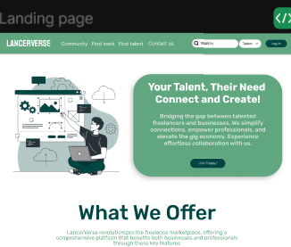
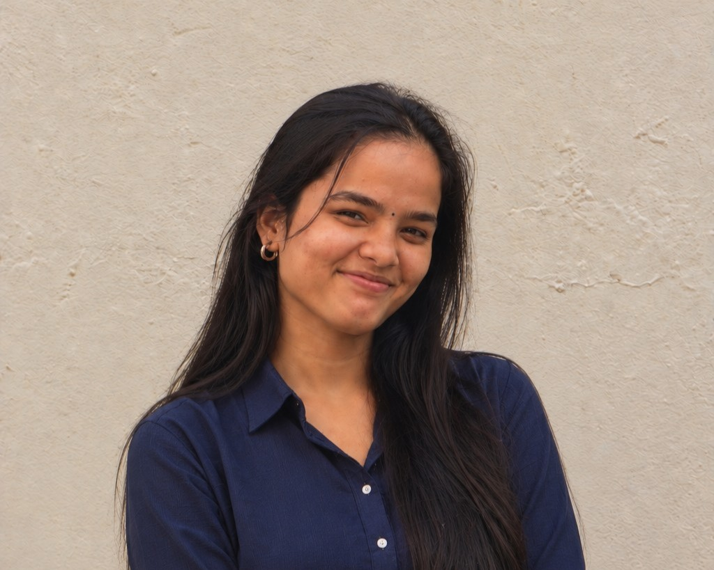
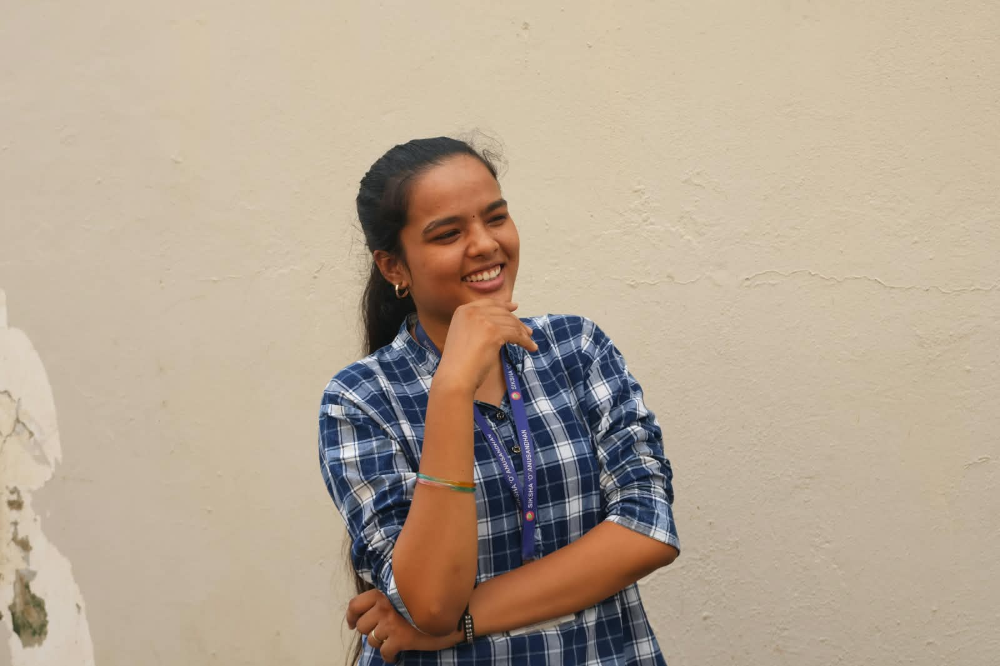
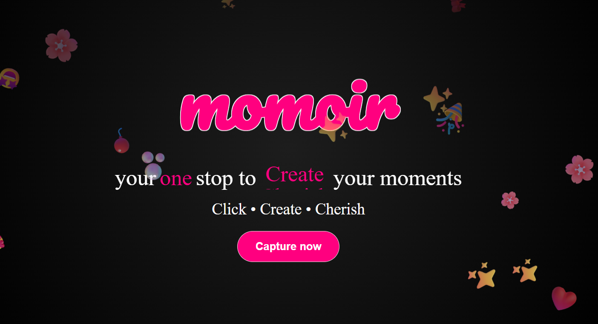

01 · Platform concept
LancerVerse
A freelancing marketplace concept focused on connecting people with opportunities and building trust into the experience.
LET’S TALK ABOUT IT ↗Hi, I’m Anjana Mahanta a computer science student who loves building things, capturing moments and telling stories.


Still becoming.Student · Creator · LearnerI’m pursuing Computer Science and Information Technology (CSIT) at ITER, SOA. I enjoy exploring how technology can solve real problems, but I’m just as drawn to the creative side of making something, the details, the feeling, and the story it tells.
Beyond code, I love photography, videography, storytelling, and working with communities. Being involved in student initiatives has taught me how to collaborate, take ownership, and turn a group of ideas into something meaningful.
I’m still learning, still experimenting, and very much a work in progress. This space is a snapshot of what I’m curious about and what I’m building along the way.
Every class, project, event, and collaboration adds another piece to the picture.
ITER · Siksha ‘O’ Anusandhan University
Built foundations in programming, systems, and software development.
Started building the fundamentals.
Foundation Classes.
The things I’ve learned, the tools I’ve tried, and the interests that keep me exploring.
A few ideas I’ve brought to life — each one taught me something new about building, designing, or solving a problem.

A freelancing marketplace concept focused on connecting people with opportunities and building trust into the experience.
LET’S TALK ABOUT IT ↗
A browser-based photobooth with timed captures, playful filters, and photo strips made to keep.
LET’S TALK ABOUT IT ↗A civic-sense project concept exploring how technology can help people flag and address local issues.
LET’S TALK ABOUT IT ↗A photographer's muse concept inspired by their displays, their art of collecting stories, and sharing the world through a visual lens.
LET’S TALK ABOUT IT ↗Coordinator of the student led initiative where the goal is to help underprivilideged children grow through teaching, and other activities that.
Have been part of a student community that encourages technical exploration, collaboration, and shared learning.
Always happy to connect with people who love learning and creating. Let’s exchange ideas or build something together!